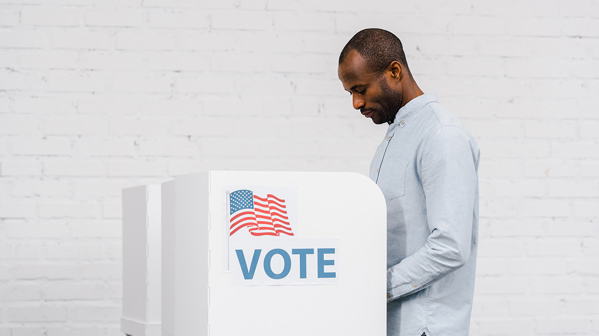

There are multiple reasons why people don’t exercise their right to vote.
Inability—Some people simply can’t vote. Examples of this would be resident aliens, felons, the incarcerated, people who must travel suddenly or unexpectedly, those restrained by mental condition, and those with religious beliefs that prohibit voting.
Apathy—Some people choose not to vote. There are many who pay little attention to government and politics and choose not to get involved.
Disenfranchisement—Others feel disenfranchised, meaning they feel they have little control over governmental affairs, so they choose not to vote.
Contentment—During good economic times, some Americans choose not to vote because they feel the good times will continue regardless of who wins. This was evidenced in the poor voter turnout of 1996.
Historical events—At times, major events impacted the number of people who participated in elections. For example, in the midterm election of 1942, voter turnout was at an all-time low because many eligible voters were overseas fighting in World War II. In that election, only 36 percent of voters cast their votes.
Political competition—More people are likely to go to the polls if it is not clear which political party will win. People are more likely to vote if they are convinced that their vote will make a difference. If people think that the election will be decided one way or the other conclusively, they may see going to vote as a burden rather than as a way to make a difference.

An American Citizen Voting
The low level of voter participation raises questions regarding the legitimacy of government. If a president, for example, can win with 50 percent of the people who bothered to vote, what percentage of the total population actually wanted that person as president? This can cause harm to the perception that the government is of and for the people, which can in turn result in a lower voter turnout.